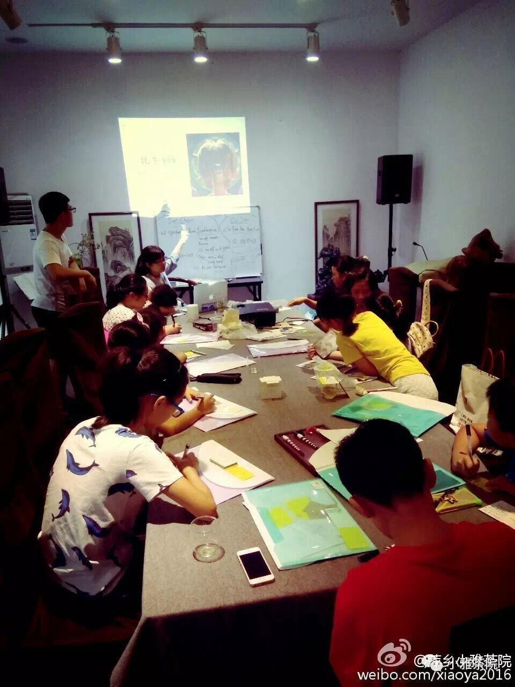
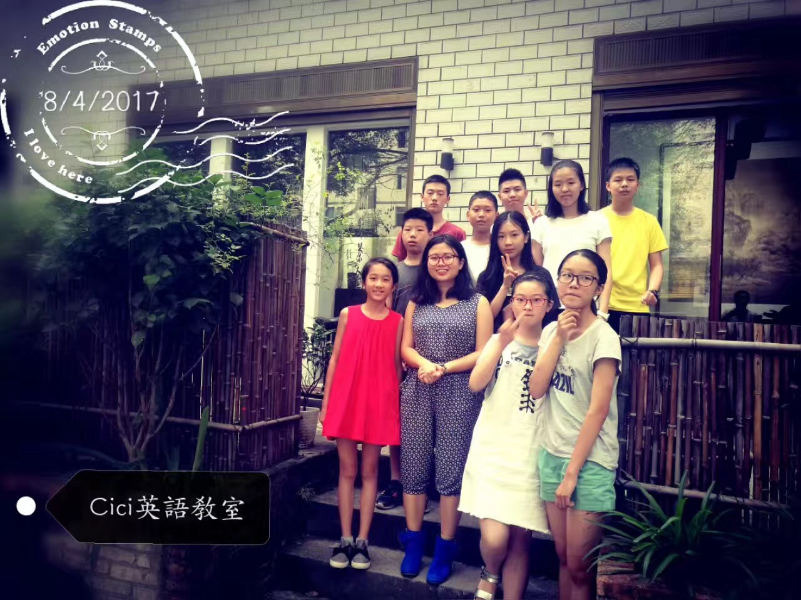
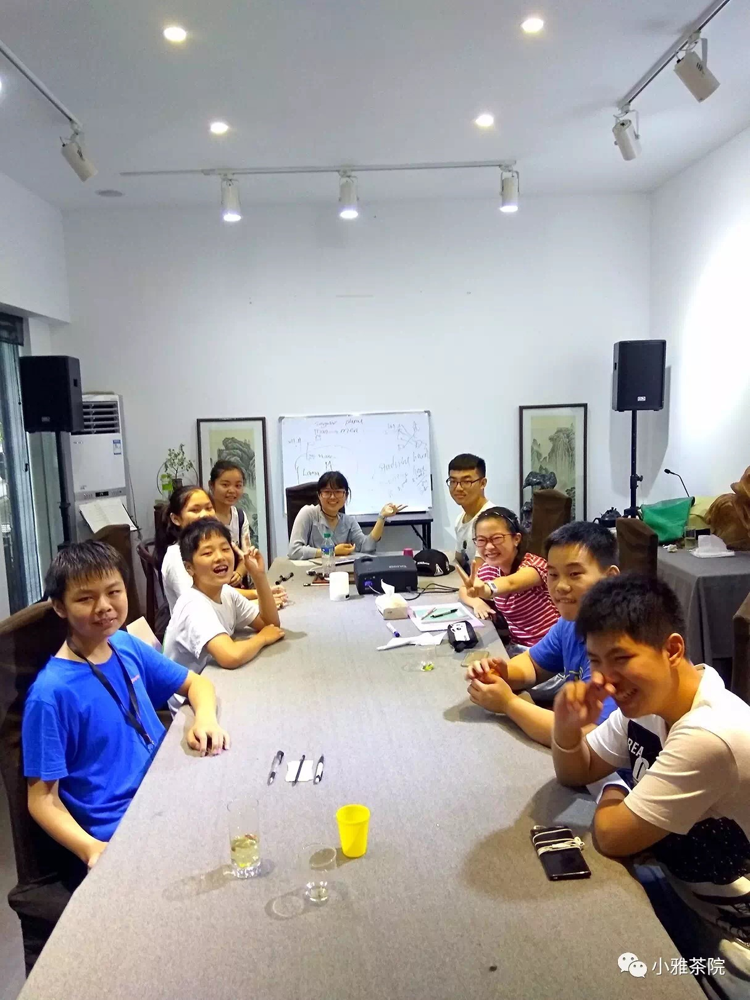
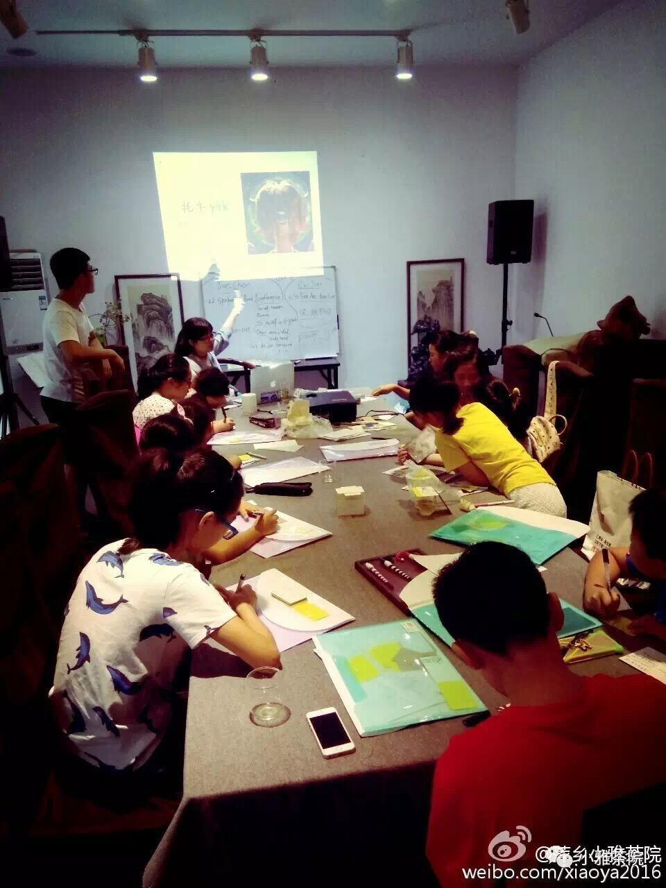
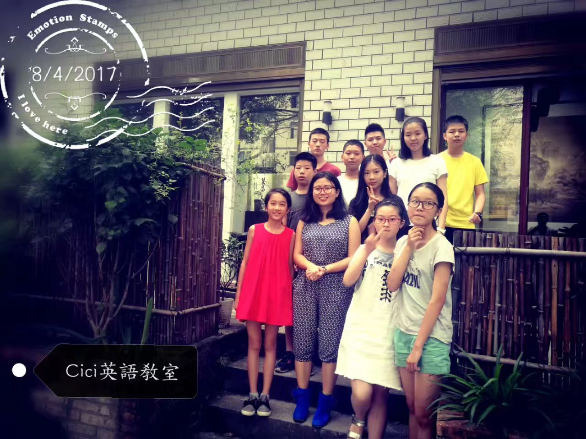
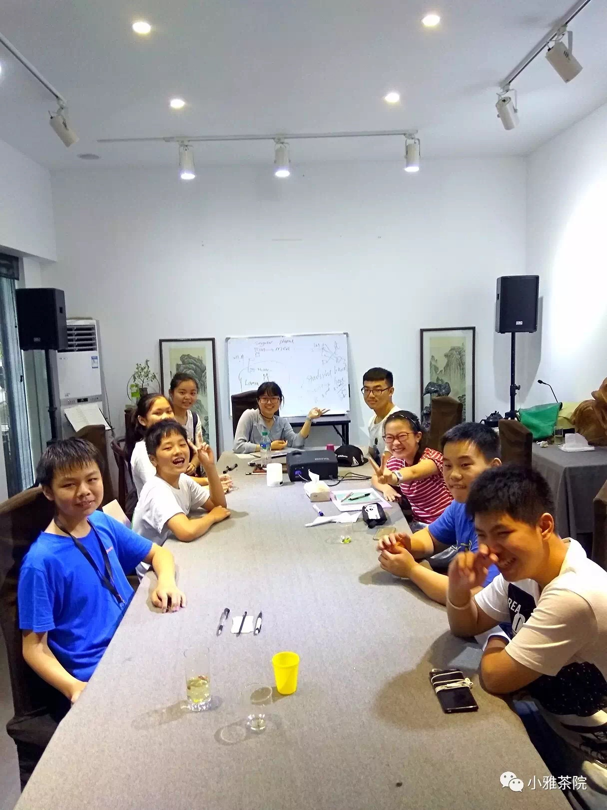

I helped organize a summer camp of 20 children for the San Luis Obispo Botanical Garden. I led group bonding outdoor activities, monitored campers' behavior, and photographed events.
I shared what I know with campers, not only limited to Environmental Science. They often motivated me to explore something new and interesting: gum-like pine resins, sour lemon berry, sweet rose hips, crunchy Yucca whipplei flower, etc.
I have launched successful English classes and have taught more than 60 students for the past three summers. I stimulated students' interests and meet high academic standards of teaching English as a second language, I focused on creative ways to learn English, for example, systematic vocabulary accumulation, and pronunciation practice. The verbal/written feedback from students and their parents has been positive and consistent throughout my tenure.


 




